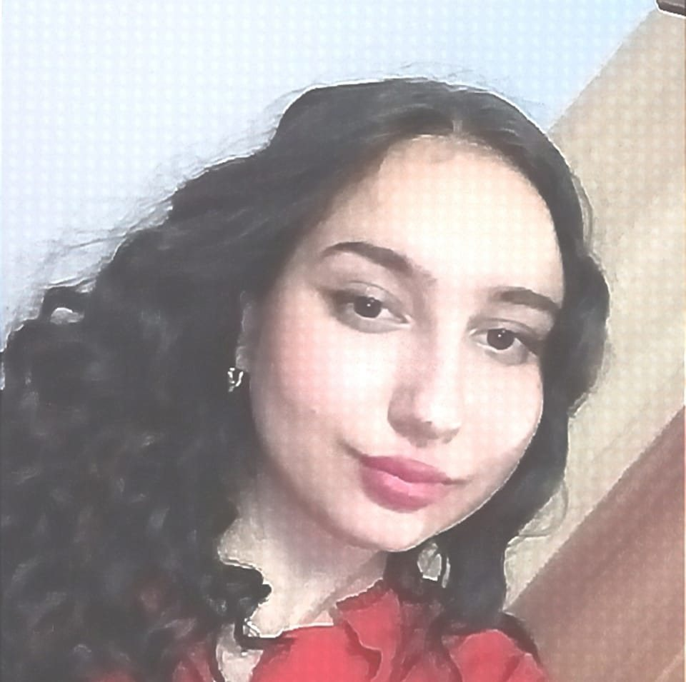

Mustea Bianca-Maria
Summary
I am a student passionate about computers. I have great interest in software and hardware. I focus
more on creating web pages. I want to help develop technology. I am looking for opportunities to
improve my skills and work on exciting IT projects.
Education
Student
Polytechnic University of Timisoara, Timisoara(Sep 2023 -
Present)
Graduation
Mihai Veliciu" Theoretical High School,
Chisineu-Cris(Sep 2019 - July 2023
Graduation)
Mathematics computer
science
Work experience
- UniHack organizer, Liga AC organization, year 2023
- Promotion Activity Manager "Tea of 5 Credits", Liga AC organization, year 2023
- Promotion Project Manager "Liga AC LABS", Liga AC organization, year 2024
- Organizer iTEC, Liga AC organization, year 2024
- Organizer ISWinT, Liga AC organization, year 2024
Skills
- C/C++ ⭐⭐⭐⭐
- HTML ⭐⭐⭐⭐
- CSS ⭐⭐⭐⭐
- Microsoft Office ⭐⭐⭐⭐
- PHP ⭐⭐⭐
Awards and Certifications
- Second place, at the county phase of the INFOEDUCATIE contest, Web Applications section, year 2023
- Second place, at the county phase of the INFOEDUCATION contest, Educational Software section, year 2022
- Mention at the Caius Iacob International Mathematics and Informatics Contest, 12th edition, section programming classes XI-XII, year 2022
Other